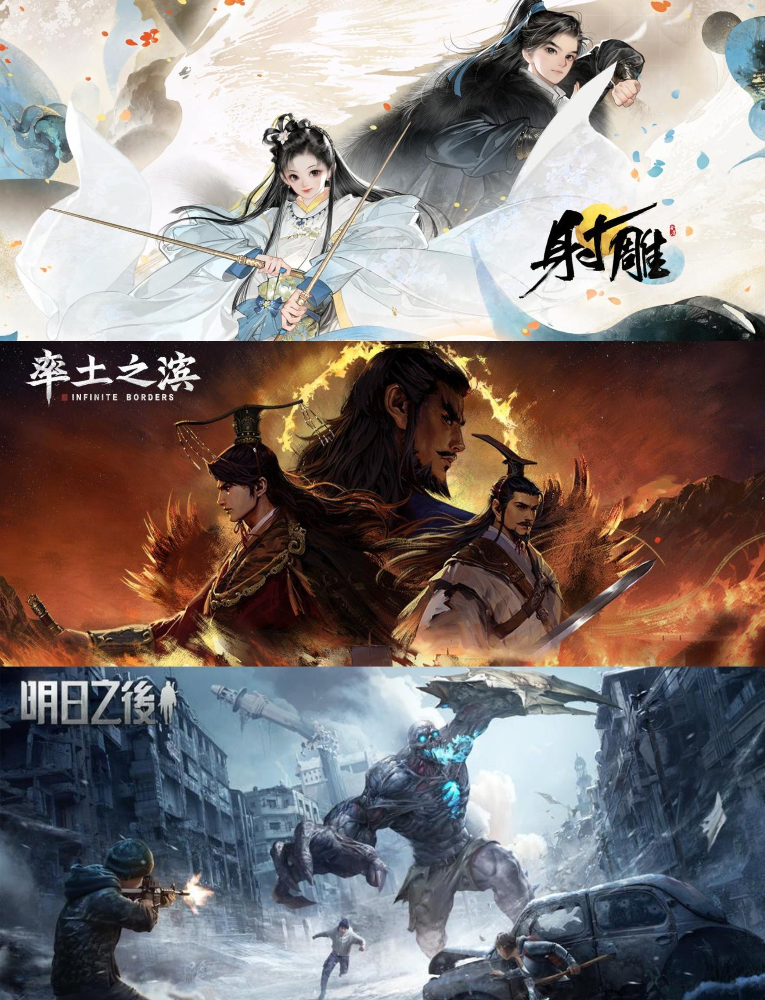

游戏营销策划 - 过往工作经历介绍
个人简介
- 核心背景：6年游戏内容营销经验，3年网易互娱核心项目经历。
- 专业领域：多项大型版本创意整合营销执行与百万级投放操盘能力。
- 核心优势：深耕内容营销策划、KOL/KOC生态运营、技术驱动型营销增长。
- 技术能力：擅长通过技术手段（JS爬虫/SQL/AI workflow）实现营销数据自动化与生态洞察反哺。
- 双语能力：英语CET-6/日语N1，支持海外市场营销与社媒运营。

资深游戏营销策划 | 多品类操盘经验
网易核心项目一览
核心职责：版本整合营销宣发与内容生态建设
- 项目覆盖：深度参与网易旗下 S 级/大 DAU 产品，涵盖 SLG（率土之滨、万民长歌）、MMO（射雕、明日之后）、体育（绿茵信仰）等核心品类。
- 营销规模：参与多个大型版本的营销方案策划和单版本百万级营销投放执行推广。
- 相关职责：覆盖线上UGC、KOL内容生态，平台资源合作，买量&短信触达转化，线下直播赛事组织等。

覆盖 SLG/MMO/体育等多元赛道营销经验
核心项目介绍 - 射雕
核心职责：内容生态体系搭建与百万级内容营销操盘
- 内容与激励闭环：主导公测-焕新测-2.0-华山论剑版本全周期KOL、KOC直播&短视频生态运营。独立策划并执行UGC生态激励活动。
- 大型直播项目统筹：牵头总计4次《射雕》大型节点官方线下版本+赛事直播，全流程负责方案设计、直播包装、rundown脚本策划、现场执行。
- 跨平台生态合作：拓展抖音短视频&直播内容生态，打通厂商任务活动，反哺端内UGC内容营销闭环。

内容生态激励与平台流量整合
核心项目介绍 - 率土之滨
核心职责：内容营销版本KOL投放与海外市场营销
- 百万级达人投放与内容模型验证：负责多版本百万级超百人次KOL投放，参与brief下发-达人筛选-脚本审核-内容投放的执行全流程。利用数据库对撞与SQL脚本打通端外曝光-端内转化全链路分析，持续优化KOL投放获客成本（CPA）。
- 从0到1构建PUCG内容生态体系：策划端外作者短视频内容生产项目。成功搭建起游戏外围供给生态，实现项目单月千万级内容曝光。
- 技术驱动海外市场与运营：通过海外社区洞察，反哺产品本地化调优与发行策略，支持长线运营决策。

SLG 版本营销达人投放

海外日区版本发行
其他核心项目参与
绿茵信仰 UGC生态：单月UGC内容曝光突破1.5亿+ 版本素材：版本营销素材与TVC创意监修 社媒宣发：制定版本宣发排期与投放加热

万民长歌 首曝宣发：参与制定项目首曝策略与发行全流程推进 社媒运营：设计社媒发布节奏及维护社群种子用户 线下活动：组织百万量级up主+垂媒封闭试玩会

明日之后 增长工具 ：社交召回 H5 月内近百万 PV，回流近万人 KOL投放：参与版本KOL内容营销投放，覆盖多品类达人 端外支付：策划网页支付活动，提升产品三方支付渗透率
技术驱动营销——直播平台自动化监测工具
痛点解决：从人工主观判断到数据可追踪量化的内容生态监控

JavaScript + MySQL + AI/Dify 自动化工作流
- 全平台监控：7x24小时实时采集游戏品牌词下抖音、快手、B站等五大直播平台的场观热度、主播资源留资信息。建立结构化品牌核心主播数据看板、竞品优质主播挖潜模型。
- 业务价值：沉淀可复用主播资源池，数据化支撑分级合作生态激励策略；不断扩充作者资源，收入私域长线孵化运营。
- 效率提升：转化为自动化日报推送工作流，拆解数据黑盒，为精细化生态运营和建设提供实时、精准的数据依据。
用户增长实践——《明日之后》H5 召回工具
核心策略：基于社交关系的精准触达与流失唤回
- 技术逻辑：基于玩家端内行为、人口学属性标签进行推荐度匹配。算法端外匹配主动添加好友，端内社交关系绑定打通，触发用户精准回流。
- 执行成果：工具单月 PV 达 近百万级，成功撬动 近万名 用户回流。
- 产品反哺：因效果出色，该功能已在游戏内二级菜单入口实装。

社交召回 H5 工具从 0 到 1 落地
内容营销与 KOL 生态运营
- 百万级投放闭环：建立标准数据对撞-数据清洗-数据分析流程。通过 A/B Test 和字段分层验证“内容钩子”效果，利用 SQL 输出数据结论洞察增长线索，迭代内容投放策略优化获客成本（CPA）。
- 线下活动 PM：统筹射雕赛事、网易园区汉服节等大型营销活动事件。负责rundown脚本、供应商协同、线下执行、媒体投放等，确保节点交付零失误，拓盘外界曝光关注。
- 新项目冷启动：参与《万民长歌》首曝方案策划及上线执行，统筹多名百万B站up主及游戏媒体闭门试玩会，全社媒矩阵帐号社群资源管理，对接线下展会参展事宜。

实战案例：某版本投放曝光-转换-ltv完整路径归一性统计
个人项目 - 游戏营销案例整合站
聚合头部游戏营销方案，构建营销发行创意新智库
- 营销方案洞察：自动化收集近 10 年游戏营销案例，挖掘优质营销创意，分析内在底层逻辑。提升方案输出人效，让决策有据可依。
- 全场景收录：覆盖营销节点、IP联动、线下、电竞赛事等多样化营销场景，快速找准对标方案，创意思路更丰富。

网站首页